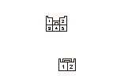
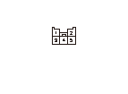

DTC B2083
DTC B2083:
R.スライド モータ回路異常
再現テスト1
1-1
HDSをデータ リンク カプラに接続する
1-2
イグニッション スイッチをON（
II
）にする
1-3
HDSでDTCをクリアする
1-4
運転席のパワー スライド ドア メイン スイッチをONにする
1-5
運転席のR.パワー スライド ドア スイッチのオープン側を3回以上ON操作する
1-6
“テスト モード メニュー”でDTCを確認する
◆ DTC B2083を表示するか
YES
-
ステップ
3
へ進む
NO
-
一過性故障、現在システムは正常
R.パワー スライド ドア コントロール ユニットとR.スライド モータ間（SLMOP、SLMCLライン）の断線点検
2-1
イグニッション スイッチをOFFにする
2-2
R.パワー スライド ドア コントロール ユニットからCカプラ（5P）の接続を外す
2-3
R.スライド モータから2Pカプラの接続を外す
2-4
R.パワー スライド ドア コントロール ユニットCカプラ(5P)とR.スライド モータ2Pカプラ間の導通を点検する
R.パワー スライド ドア コントロール
ユニット
Ｃカプラ(5P)
R.スライド モータ2P
カプラ
No.3端子
⇔
No.1端子
No.5端子
⇔
No.2端子
◆ 導通があるか
YES
-
ステップ3へ進む
NO
-
コードの断線

R.パワー スライド ドア コントロール ユニットとR.スライド モータ間（SLMOP、SLMCLライン）のボディ短絡点検
-1
イグニッション スイッチをOFFにする
-2
R.パワー スライド ドア コントロール ユニットCカプラ（5P）のNo.3端子とボディ アース間、No.5端子とボディアース間の導通を点検する
◆ 導通があるか
YES
-
コードのボディ短絡
NO
-
ステップ
4
へ進む
R.スライド モータの点検
-1
R.スライド モータの点検を行う
◆ モータは正常か
YES
-
R.パワー スライド ドア コントロール ユニット不良
NO
-
R.スライド モータ不良
